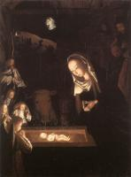
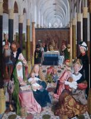

| The Raising of Lazarus
1480
|
 | Adoration of the Magi
1480-85
|
 | St Bavo
1480
|
 | The Tree of Jesse
1480
|
| Virgin and Child
1480
| |
|  | Nativity, at Night
1484-90
|
 | Burning of the Bones of St John the Baptist
1485
|
 | Lamentation over the Dead Christ
1485
|
|  | The Holy Kinship
1485-95
|
 | Adoration of the Kings
1490
|
 | John the Baptist in the Wilderness
1490-95
|
 | Man of Sorrows
1495
|
 | Virgin and Child
|